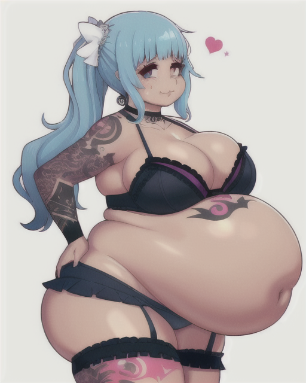
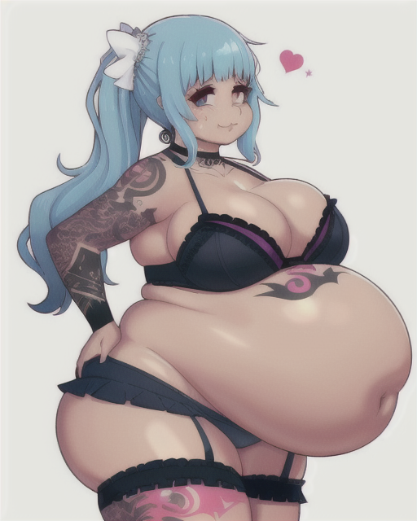

I am offsetting my lack of human connection with AI generated pictures of attractive women.


Jacqueline was a little hesitant going skiing, but luckily she's blubbery enough to keep herself plenty warm. Her balance is pretty bad though, so she insists on holding your hand whenever she's pizza-ing down a green circle.
 

© DogmomAI.top. All rights reserved.
Besides the AI art, which is the property of no man.